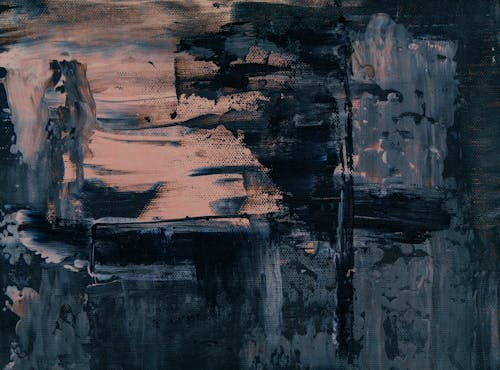

ทีม The Art Attack
โครงงานวิชาการ ประกวดวาดภาพ ศิลปะ เชิงสร้างสรรค์ ที่สะท้อนความรู้สึกเรื่องราวต่างๆจากจินตนาการ ที่แสดงออกด้วย การขีดเขียน การวาดภาพระบายสี รวมถึงสามารถนำเสนอผลลัพธ์ในรูปแบบรายงานหรือผลงานได้


